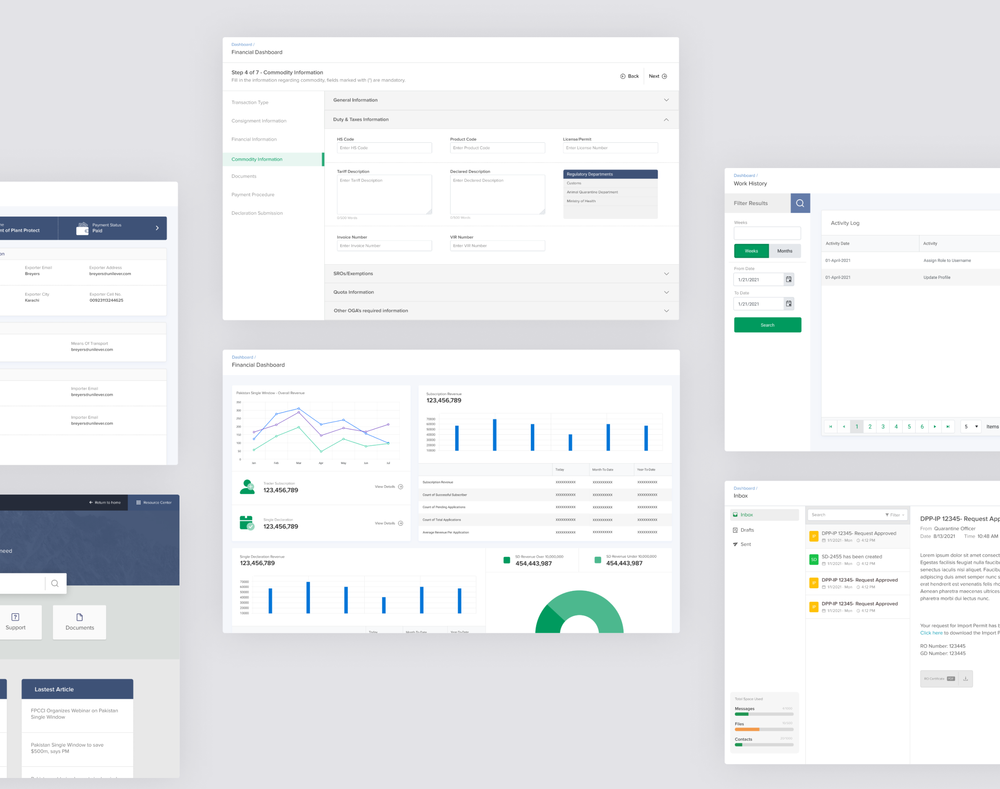

Empowering an enterprise-level team for efficient and effective co-creation
Overview
Pakistan Single Window is an enterprise that set out to build a system that would improve the efficiency of Pakistan’s Trade System and digitize various government and federal ministries. It will comply with the Single Window standards of other countries and provide a single gateway for trade-related activities.
As a User Experience Engineer, my goal was to design a modular system to help the team ideate and develop most of PSW's functions with ease and efficiency..
Role
Design
Research
Deliverables
Design Proposal
Design System Assets
Design System Implementation Document
Impact in numbers
100+
assets & tokens
Bridging the design and development gap
∼40%
reduction in development time
Making the creation cycle efficient
10+
parallel development cycles streamlined
Removing cross-team dependencies
Why do we need a design system?
Challenges
Consistency
Since Pakistan Single Window (PSW) Portal supports multiple platforms and encompasses various functionalities, it was crucial to understand the need for a consistent experience.
Reusability
While increasing reusability helps reduce the production time of a module, we also needed to make sure that customizations at all levels should be allowed in the system.
Efficiency
Using the design system as a tool for quick ideation became our priority goal to reduce the time to bring out new ideas, reduce design from scratch for each instance and solve the problems quicker.
Journey
Research
Reading popular
design system documentation
We referred to well-established design-system documentation such as Material, Carbon, and Fluent as well as various guides such as Atomic Design by Brad Frost and Refactoring UI by Adam and Steve.
Reviewing existing
requirement artifacts
We studied all the previous technical requirements documentation such as BRS, and SRS, and prioritized our existing user flows ensuring they align with our business goals.
Challenge
A small design team working with a large team of developers.
Approach
Since we had to continue our daily tasks while working on the design system, we broke the tasks into time-bound actionable items (using hills) that conveyed the overall progress and business value to the stakeholders.
Audit
Mapping the architecture
Initially, we created an information architecture to map out the main functions. This activity gave us an insight into the scale and user flows.
Consolidating components
& patterns
We compiled all the components from various sources that are being used in our application on a single-page document to map out current and all the possible future requirements.
We used mind mapping while auditing the front end to get a holistic view of the system.
Design
Foundation
By following the atomic approach, we focused initially on the building blocks of our design system, keeping scalability in mind. All of our components are built using these properties. Since the design system is for a web application, we kept the foundation platform agnostic.

Component library
After intensive research and inventory, we compiled all of our components within the system in the form of a library with different categories of design system tokens. Since we are using React JS on the front end, it is easier to isolate components on the development side as well.
Pattern library
Working in a small design team of a large enterprise organization where collaboration was a priority, presented us with a need to create templates and define a pattern creation process for our component library.
Impact
A clear difference in time was observed [approx 40% average] between modules developed using our new design system and modules developed and designed from scratch.

We used our task management tool (click up) to measure the time taken on each module with a similar workforce.
Benchmarks & testing
Our Design System provides a guideline to benchmark our ideas and test and improve the system for new cases.
Improvement & documentation
We continue to improve the documentation and develop use cases to understand the application and help the engineering team use the system efficiently.